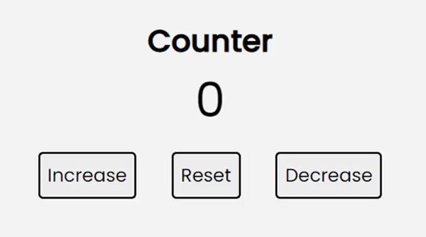

-

#4: Build a Simple Counter with Vanilla JS
To make my Vanilla JS strong I made this app that uses DOM elements. It's very easy to build. Let's Begin!!!.
Read More
-

#3: First pull requests
Pull request - When you have made some changes to someone's project you send that person a pull request he/she reviews and adds it to their project.
Read More
-

#2: What are Git and Github? (Basic Stuff)
Git and Github are the most used technologies in web development they are necessary for every developer to know about. We will get a basic overview of what they are.
Read More
-
#1: HTML5 and CSS3 for Absolute Beginners
I have recently started learning web development and to help you out these are some of the basic HTML and CSS things to get started with your Web Dev Journey.
Read More